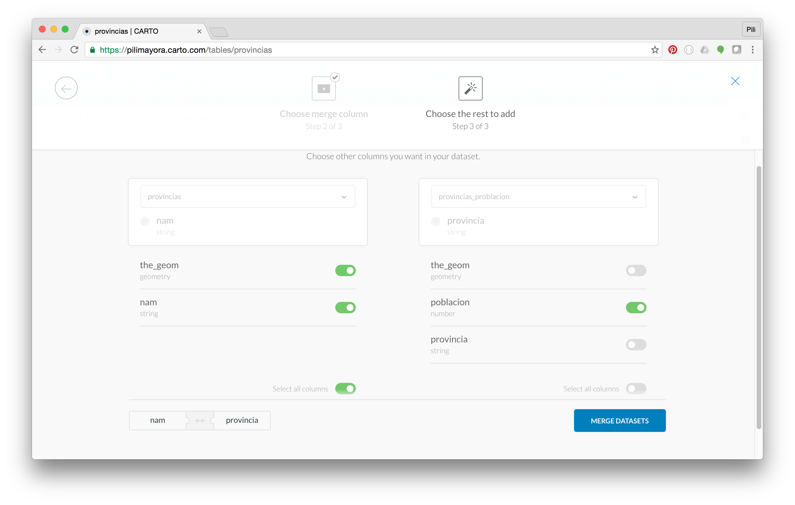
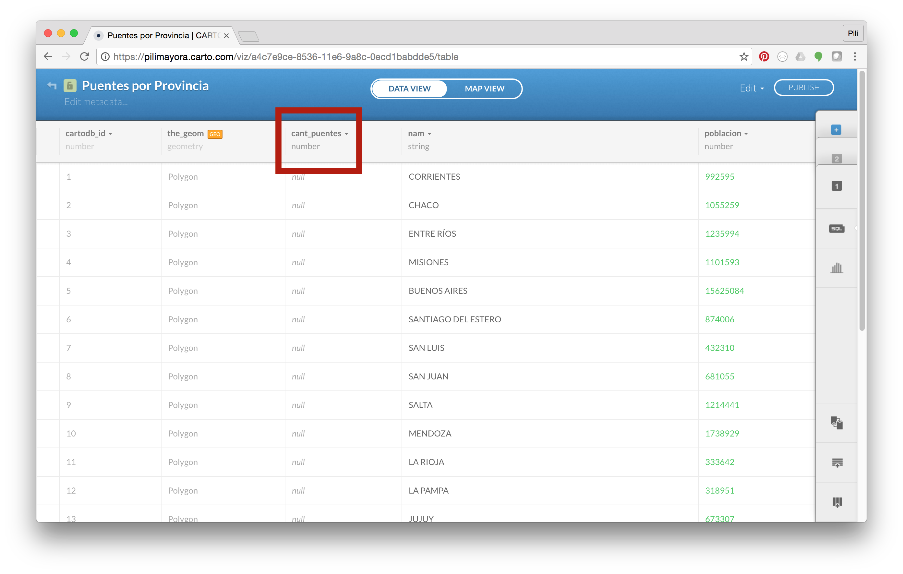

Producto Terminado
Paso 1
Crear cuenta en CARTO
Entrar al sitio de CARTO y crear cuenta gratuita.

Paso 2
Obtener los datos de provincias y puentes
Opción 1: Bajar datos de carpeta de data del repositorio de este taller.
Opción 2: Bajar datos del sitio de IGN.
Paso 3
Cargar los datasets en CARTO
Ir a la sección de /Datasets de tu cuenta.
Agregar nuevo dataset

Repetir este paso para provincias, puentes y población por provincia.
Paso 4
Verificar que se haya cargado espectacularmente

Paso 5
Mergear datos de provincias

Paso 6
Crear mapa
Agregar capa de provincias y capa de puentes
Paso 7
Calcular cantidad de puentes por provincia
Agregar columna numérica para calcular la cantidad de puentes por provincia
Escribir mini SQL para calcular la intersección entre puntos y polígonos (puentes y provincias).
UPDATE polygon_table SET point_count = (SELECT count(*)
FROM points_table WHERE ST_Intersects(points_table.the_geom, polygon_table.the_geom))Paso 8
Visualizar la distribución de puentes en el país
Esconder la capa de puentes, ya que tenemos todo calculado en la capa de provincias.

Elegir opción de Cloropleth para la columna que contiene la cantidad de puentes
Customizar las info windows para ver información de las provincias en click o hover
Paso 9
Calcular puentes per capita por provincia
Agregar columna numérica para calcular la cantidad de puentes per capita por provincia
Escribir mini SQL para calcular los valores de esta columna
UPDATE table SET column = (puentes / poblacion)Paso 10
Visualizar la cantidad de puentes per capita por provincia
Elegir opción de Cloropleth para la columna agregada en el paso anterior
Customizar las info windows